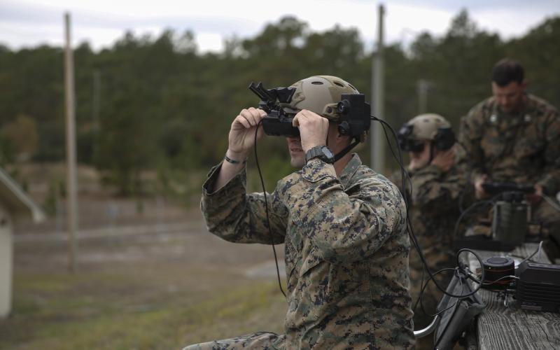

What is Augmented Reality?
This technology superimposes a CG image on a user’s view of the real world.
Unlike virtual reality, where everything a user sees is generated by a computer,
augmented reality keeps the real-world focus,
but just adds elements that aren’t really there to enhance the user’s experience.
Best Current Examples of Augmented Reality
The potential of augmented reality is endless.
It’s only a matter of time before this technology becomes a part of our everyday lives.
We’re not quite there yet,
but a few companies and organizations are making great strides with this technology today.
Weather Channel Studio Effects
Television news has been using special effects to enhance its program quality for years.
For example, weathermen have been standing in front of green screens for years that appear as maps to viewers to deliver their weather forecasts.
The Weather Channel is now taking technology one step further to illustrate extreme weather and its effects.
Over the past several years, the broadcast company has used augmented reality to display a 3D tornado on set,
show the height of flooding during storm surge and hurricanes and just recently drove a virtual car through the studio to show how vehicles lose control on snowy or icy roads.
Expect news, weather and sports programming to continue experimenting with augmented reality as a way to improve the television experience for viewers.
U.S. Army
Not all examples of augmented reality are fun and games.
The United States Army is experimenting with augmented reality programs to be used in combat that would help soldiers distinguish between enemies and friendly troops,
as well as improve night vision.
This technology is still in development and may be years away from deployment,
but military officials say this innovation would improve combat efficiency and help save lives.

« Back